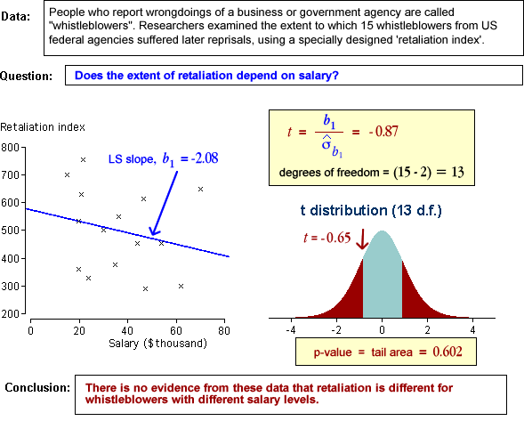

Does the response depend on X?
In a normal linear model, the response has a distribution whose mean, µy, depends linearly on the explanatory variable,
Y ~ normal (μy , σy)
If the slope parameter, β1, is zero, then the response has a normal distribution that does not depend on X.
Y ~ normal (β0 , σ)
If the slope is zero, there is no association between Y and X.
Testing for zero slope
To assess whether the explanatory variable affects the response, we test the hypotheses
H0 : β1 = 0
HA : β1 ≠ 0
The least squares slope from a sample, b1, is the obvious statistic to throw light on the value of β1, but b1 varies from sample to sample. We must therefore take account of its sampling distribution to assess its distance from zero.
Software output
You will rely on computer software to perform the test for zero slope. We will first describe the typical output from such a test, then give a partial explanation about the information in the output. Most software provides regression output in the same format. Typical output from fitting a regression model to n = 20 observations that use an explanatory variable "Advertising" to predict the response "Sales" is shown below.
Interpretation of p-value
The p-value for a test of zero slope is interpreted in the same way as for other hypothesis tests. The table below may be regarded as an over-simplification, can be used as a guide.
| p-value | Interpretation |
|---|---|
| over 0.1 | no evidence that the null hypothesis does not hold (no evidence that the slope is non-zero) |
| between 0.05 and 0.1 | very weak evidence that the null hypothesis does not hold (very weak evidence that the slope is non-zero) |
| between 0.01 and 0.05 | moderately strong evidence that the null hypothesis does not hold (moderately strong evidence that the slope is non-zero) |
| under 0.01 | strong evidence that the null hypothesis does not hold (strong evidence that the slope is non-zero) |
Consider a data set with least squares slope b1 and corresponding p-value, 0.0023. We should conclude that there is strong evidence that the linear model slope is not zero and therefore that the response is related to the explanatory variable.
Similarly, if we calculate that the p-value for b1 is 0.4, this tells us that a least squares slope as far from zero as b1 would not be unusual if Y and X were unrelated. Our conclusion should be that there is no reason to doubt the null hypothesis — there is no evidence of a relationship between the response and explanatory variables.
Examples
The following data sets show hypothesis tests for a few data sets and the conclusions that are reached.
